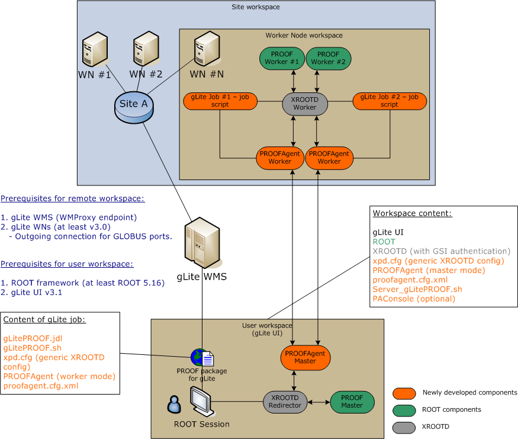

Doc: v.2.0.4.3 (18-02-2008)
gLitePROOF v.2.0.4

Choose a directory where you want to install gLitePROOF, we take /tmp/test as an example. Unpack gLitePROOF tarball to this directory:
tar -C /tmp/test -xzvf gLitePROOFpackage.2.0.4.tgz
Tar will created a new directory – gLitePROOFpackage, where gLitePROOF package will be located.
Change to the gLitePROOF directory:
cd /tmp/test/gLitePROOFpackage
and edit the install script. In the script you need to change at least the INSTALL_PATH variable. It should point to the gLitePROOFpackage directory. In our example it will look like the following:
INSTALL_PATH=/tmp/test/gLitePROOFpackage
You may want to change some other setting. Here the description of the variables, which could be used to adjust gLitePROOF installation:
|
Variable |
Description |
|
INSTALL_PATH |
A full path to the gLitePROOF installation. |
|
GAW_PKG |
TODO |
|
GAW_LINK |
TODO |
|
GAW_OPTIONS |
TODO |
|
PROOFAgent_PKG |
TODO |
|
PROOFAgent_LINK |
TODO |
|
PROOFAgent_OPTIONS |
TODO |
|
PAConsole_PKG |
TODO |
|
PAConsole_LINK |
TODO |
|
PAConsole_OPTIONS |
TODO |
|
QTDIR |
TODO |
|
QTINC |
TODO |
|
QTLIB |
TODO |
Execute installation script, which will perform downloads of required modules, build them and configure gLitePROOF for the first run:
./install
In order to enable gLitePROOF environment you need to source the gLitePROOF_ENV.sh script:
source gLitePROOF_ENV.sh
You need to source this script every time when you want to use gLitePROOF or source it from your bash profile.
Now the installation is done. If there were problems during installation, please see Support or Known Issues.
As it was mentioned above gLitePROOF consists of several modules and to configure gLitePROOF one should configure some of these modules.
To test your gLitePROOF installation you can use a simple test provided with the distributive (see the test directory in your gLitePROOF installation folder). The test performs a simple ROOT analysis.
Copy the test/dstarmb.root file to the location which you specified as your olb.path in the template/xpd.cf.template files. It is also recommended to make several copies of the root file, like /opt/PROOF_DATA/dstarmb0.root and /opt/PROOF_DATA/dstarmb1.root if you use a default location.
In the test/simple_test0.C file you have to change the following lines so that they reflect your configuration:
set->Add( "root://depc218.gsi.de:20094//opt/PROOF_DATA/dstarmb0.root" ); set->Add( "root://depc218.gsi.de:20094//opt/PROOF_DATA/dstarmb1.root" );
Now you are ready to perform this test. Use the How to run chapter to perform this test using gLitePROOF.
For the list of known issues please follow the following link: gLitePROOF Trac
Your requests you can send to: Anar Manafov or to GSI GridTeam.
Use gLitePROOF Trac to find out details or/and post tickets related to the project. There you also can find SVN repository, Build system, and project and source code documentation.